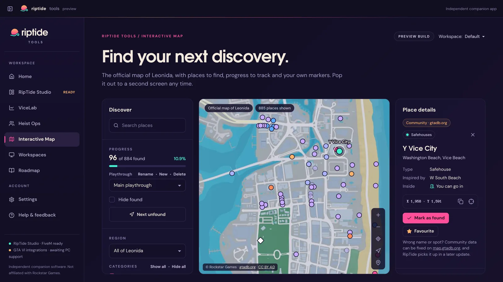
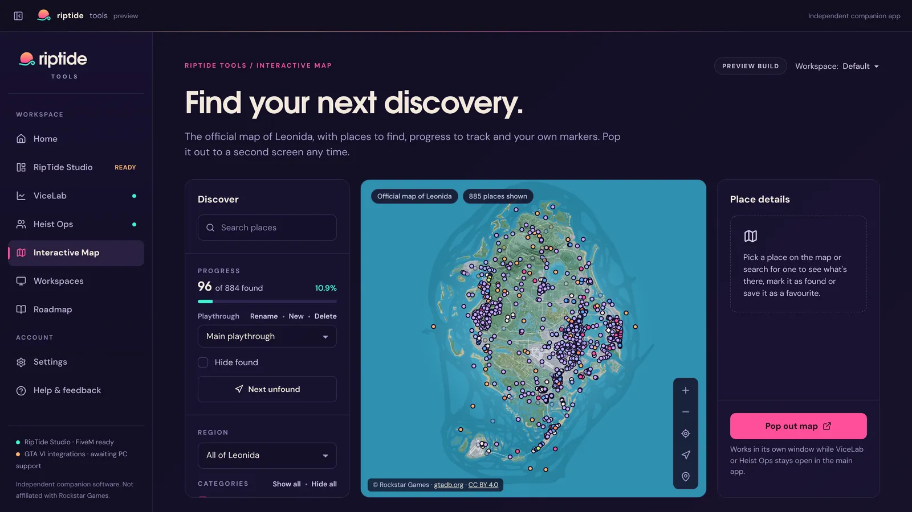
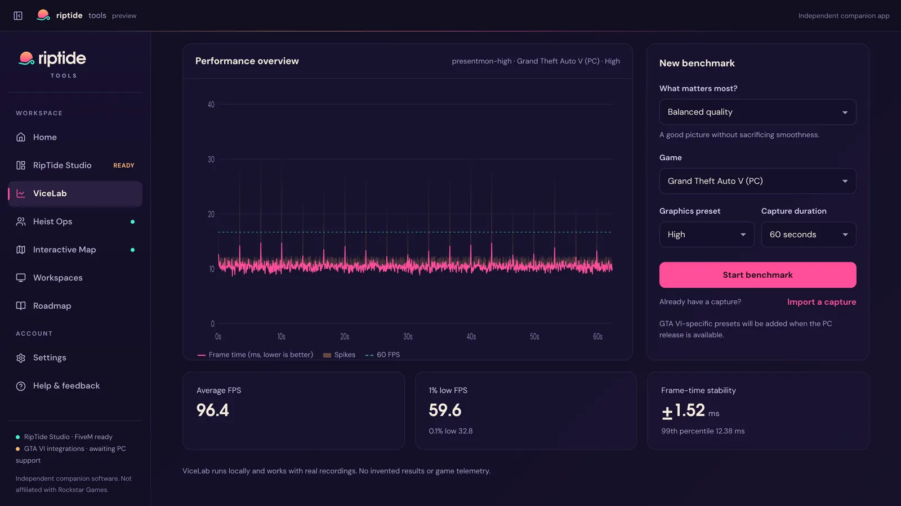
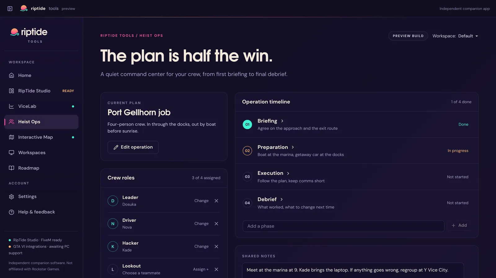
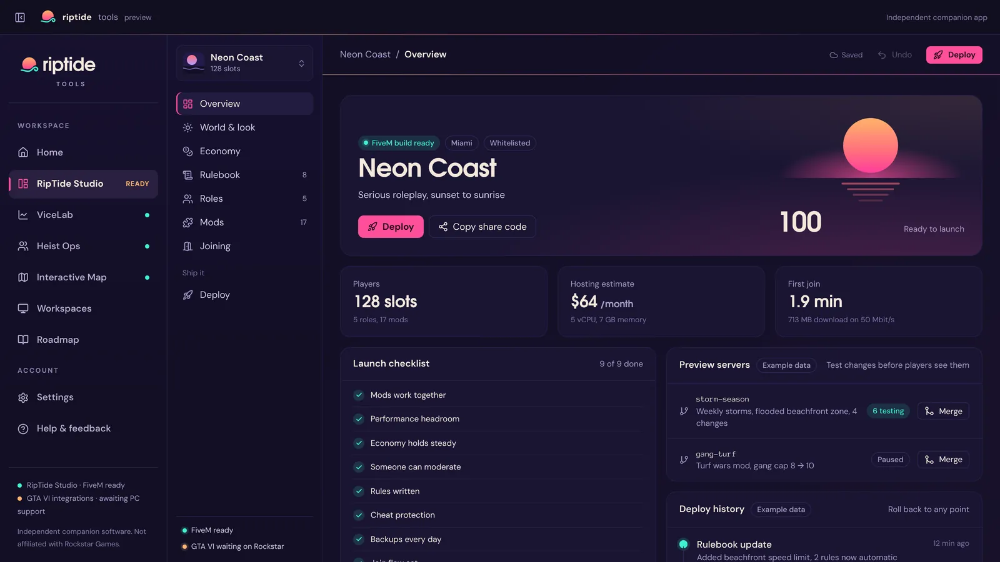
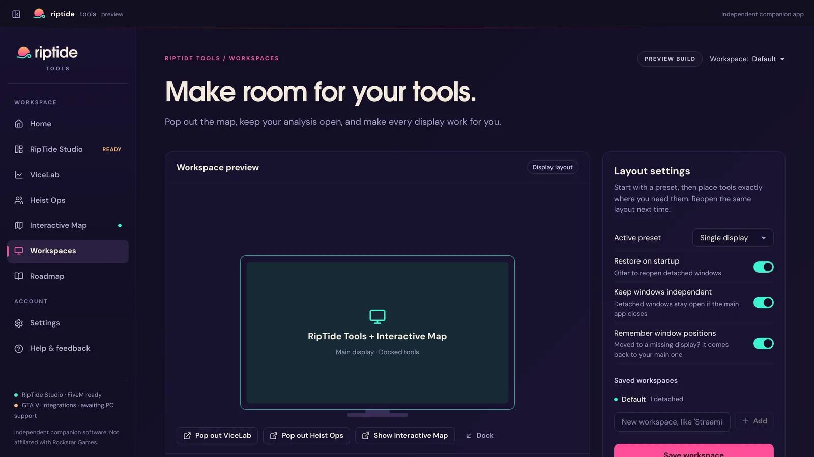
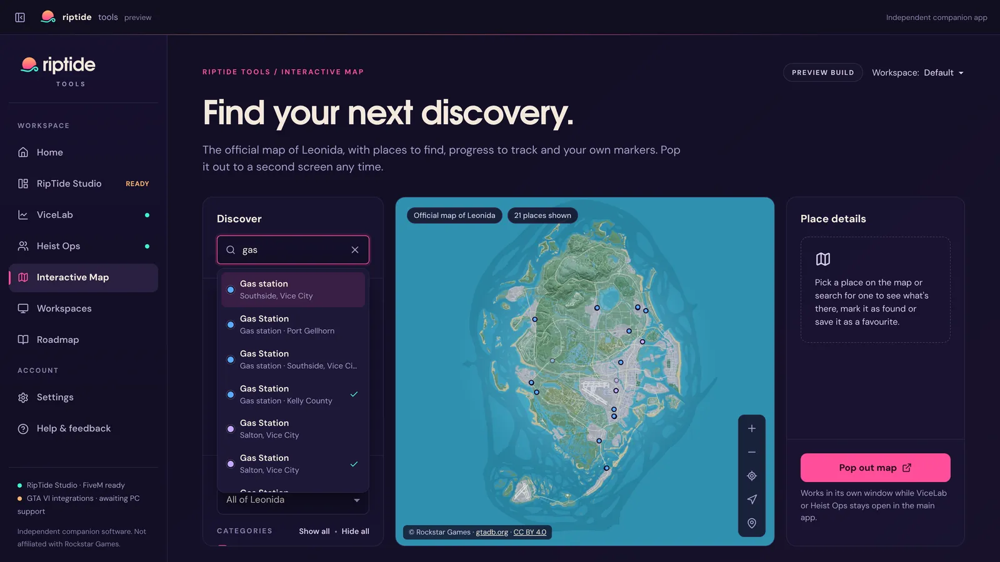
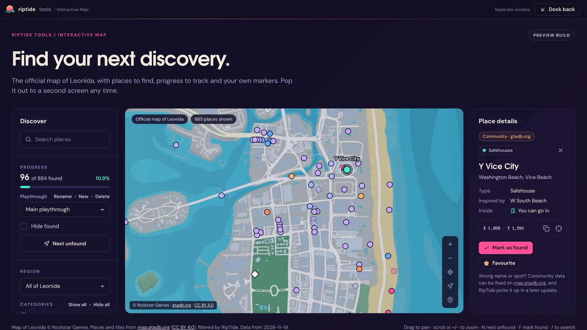

All in one app
Five tools in one window and one workspace. No more ten browser tabs.
Free preview · built for GTA VI on PC
The official map of Leonida, real benchmarks, crew plans, a no-code server studio and windows that follow you across monitors. All in RipTide Tools, all on your PC.
Runs in your browser, or download it for Windows, macOS and Linux. No account, nothing uploaded.

Everything in the trailer is the real app, as it is today.
Open as many as you like. They keep running while you switch, so you never lose your place.





Interactive Map
Rockstar's map with every place the community has pinned down so far. Search for a shop, filter by region, tick places off as you find them and keep a separate run for each playthrough.

Pop a tool out and it keeps every filter. Your main window stays free.

Made by the creator of PushFPS, with the same rule: it has to make your setup better without getting in the way.
Five tools in one window and one workspace. No more ten browser tabs.
Pop any tool out. It remembers where it was, even after a restart.
No account and nothing uploaded. Your captures, plans and progress stay with you.
No memory reads, no injection, no bots. ViceLab only reads files your capture tool saved.
Numbers come from your own runs, and map data is credited. Nothing is made up.
Built to support it the day Rockstar's PC tools land, and updated as we learn more.
It's a preview, so here's exactly what works, what's next and what's waiting on Rockstar.
Same app, saved as real files on your computer. Works offline, no account, your progress never gets cleared with your browser data, and new versions install with one click.
The apps aren't code-signed yet, so the first launch shows a warning. Windows: More info → Run anyway. macOS: right-click the app and choose Open. Your data is saved in Documents/RipTide. All downloads and release notes
Yes. The preview is free to use, in your browser or on your own machine.
No. Open the app and it runs in your browser. If you want your data saved as files on your computer, download the desktop app for Windows, macOS or Linux.
The map does: it's the official map of Leonida. Everything that needs the game itself, like benchmarks and servers, waits for GTA VI on PC. Rockstar hasn't announced a PC date yet.
RipTide never reads game memory, never injects anything and never automates gameplay. ViceLab only reads capture files your own tools saved.
Nowhere online. In the desktop app they're saved as files in Documents/RipTide, with a backup copy of each. In the browser they're saved on your device until you clear its site data. Either way you can export a backup in Settings.
When a new version is out, the app shows a popup. Click Update now and it downloads it, closes, installs it and opens again. It only asks GitHub which version is newest, checks every download against its published checksum, and you can turn automatic checks off in Settings.
The map of Leonida is © Rockstar Games. Places come from the gtadb.org community under CC BY 4.0, filtered and sorted by RipTide.
It's early, it's free, and your feedback decides what comes next.